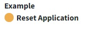
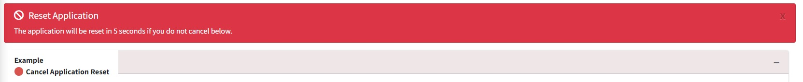
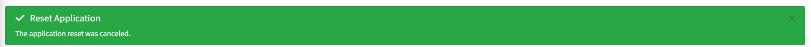
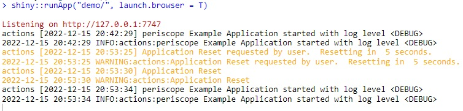
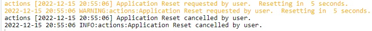

Using the appReset Shiny Module
Mohammed Ali
2026-08-05
Source:vignettes/applicationReset-module.Rmd
applicationReset-module.RmdUsage
Shiny Module Overview
Shiny modules consist of a pair of functions that modularize, or package, a small piece of reusable functionality. The UI function is called directly by the user to place the UI in the correct location (as with other shiny UI objects). The module server function that is called only once to set it up using the module name as a function inside the server function (i.e. user-local session scope. The function first arguments is string represents the module id (the same id used in module UI function). Additional arguments can be supplied by the user based on the specific shiny module that is called. There can be additional helper functions that are a part of a shiny module.
The appReset Shiny Module is a part of the periscope2 package and consists of the following functions:
- appResetButton - the UI function to place the button in the
- appReset - the UI function to place the button in the
appResetButton

This is a toggle button can be placed in the UI like any other element
This button is automatically wired to reset the application to the initial session state
The user is given a warning (as an alert on the Advanced tab) and the reset is delayed (default = 5s) to allow the user to cancel the reset.


- Reset requests and cancellations are logged automatically.

Successful reset request

# Inside ui_body.R or similar UI file
appResetButton('appResetId')appReset
The appReset function is called directly. The call consists of the following:
- the unique object ID
- the logging logger to be used
# Inside server_local.R
appReset(id = 'appResetId', logger = logger)Sample Application
For a complete running shiny example application using the appReset module you can create and run a periscope2 sample application using:
library(periscope2)
app_dir = tempdir()
create_application(name = 'mysampleapp', location = app_dir, sample_app = TRUE)
runApp(paste(app_dir, 'mysampleapp', sep = .Platform$file.sep))Vignettes